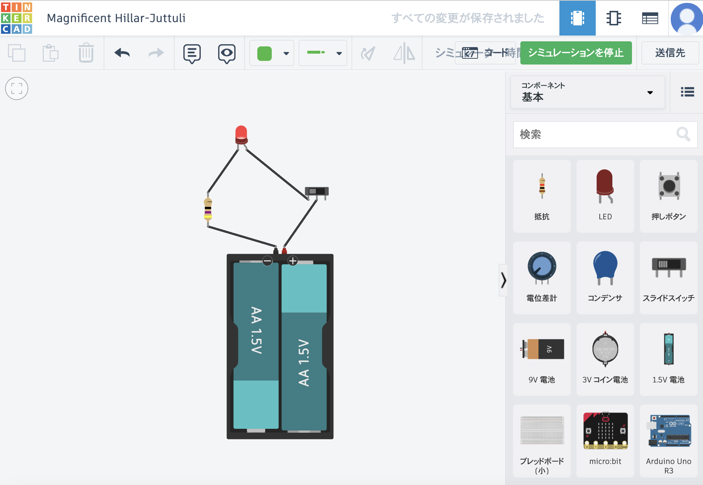

Tinkercad (AUTODESK)を紹介！
[超初心者向け]無料（タダ）で始める電子工作 その１ シミュレータソフト（Tinkercad）で回路の練習をしよう
Tinkercad
Tinkercad
Fusion360を作ってるAUTODESKのウェブアプリケーション
使ってみる

これ、便利です。
ちなみに、Tinkercadの由来を検索したところ
Tinkerは「機械とその部品を修理し実験することを楽しむ人。」
cadは作図ツールという意味らしいです。